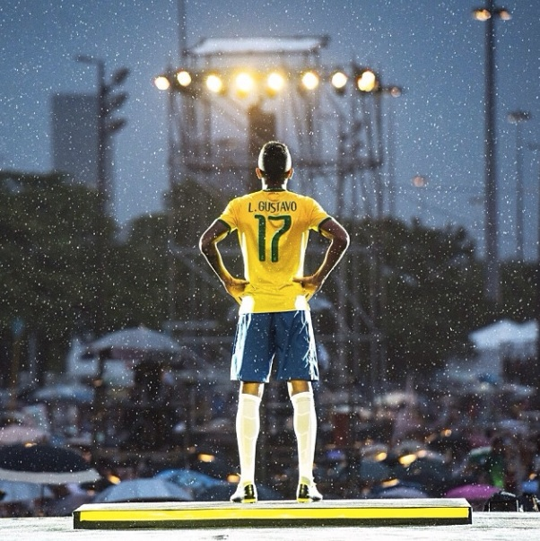
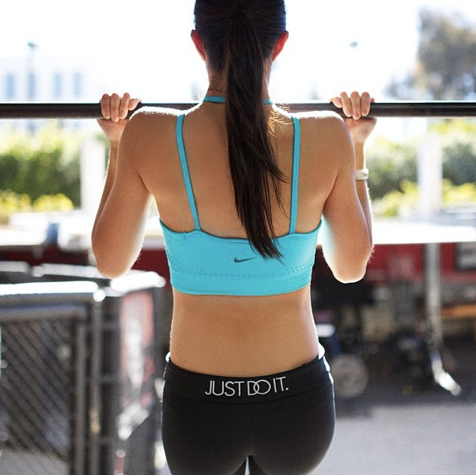
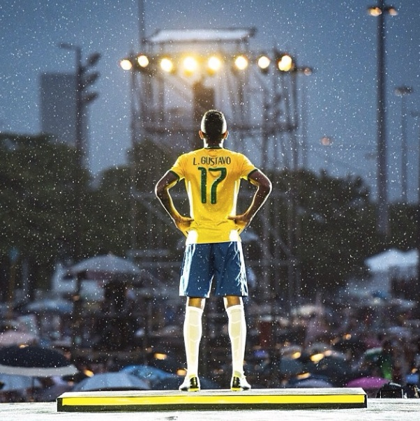
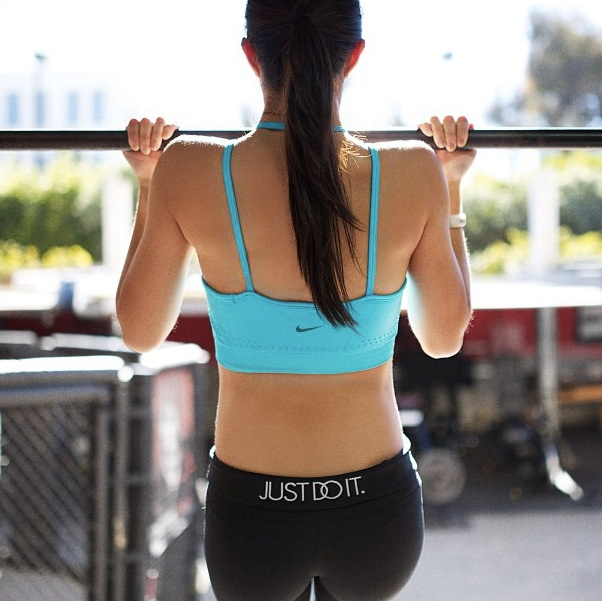

OUR MISSION: TO BRING INSPIRATION AND INNOVATION TO EVERY ATHLETE IN THE WORLD
Nike rang in the new millennium with a new footwear cushioning system called Nike Shox, which debuted during Sydney in 2000. The development of Nike Shox culminated more than 15 years of perseverance and dedication, as Nike designers stuck with their idea until technology could catch up. The result was a cushioning and stability system worthy of joining Nike Air as the industry’s gold standard.
Photos 


